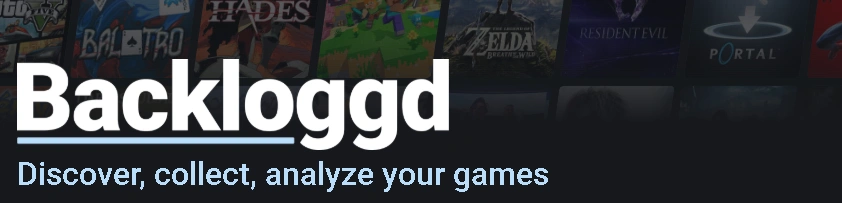

The Game OwOrds 2026
Los Game OwOrds se trata de un evento enfocado en compartir entre nosotros uno de nuestros pasatiempos favoritos, los videojuegos. Pero, sobre todo, se trata de una excusa más para reunirnos, compartir experiencias y rememorar el año que hemos pasado juntos.
A través de las buenas, pero sobre todo las malas, nos mantenemos unidos año tras año y este evento busca reforzar ese vínculo.
Ultimas Noticias
Pagina Web Oficial
¡Ahora los Game OwOrds cuentan con página web! Podéis ver en ella la normativa, especificaciones de las distintas categorías, las recomendaciones e incluso las presentaciones de años pasados.
Video presentación
¡Ponte al dia con los cambios más importantes de los Game OwOrds con este video presentación! Haz click aqui para verlo
¡Las recomendaciones!
Finalmente se han anunciado las recomendaciones de 2026, clickea aqui para verlas
Backloggd
Backloggd es una pagina web donde podéis crear un seguimiento de los juegos que habeis probado, los que planeais jugar y puntuarlos.
Podéis crear vuestras propias listas donde añadir todos los juegos que habeis jugado este año y así no olvidaros de ninguno a la hora de nominarlos.

Normas de convivencia
● A la hora de mostrar las nominaciones el presentador las dirá en voz alta.
● Cualquier persona tiene libertad de reaccionar sin interrumpir violentamente.
● El invitado que haya nominado esos títulos tiene la oportunidad de hablar sobre sus decisiones a la hora de nominarlos.
● No hay límite de tiempo a la hora de hablar o debatir, sin embargo, el presentador se guarda el derecho a interrumpir o exigir que se acelere la conversación si considera que se alarga demasiado y actuar de mediador.
Preguntas y F.A.Q.
●Cualquier duda que se tenga deberán ser referidas directamente al organizador del evento
●Al mismo tiempo, se pone a disposición pública un documento en constante actualización de FAQ.
Notas del parche
Los Game OwOrds están en constante desarrollo y pueden ocurrir muchos cambios. Estos se comunicarán directamente.
Aun así, disponemos de un documento donde se registran todos los cambios que se han hecho en detalle y el porqué.